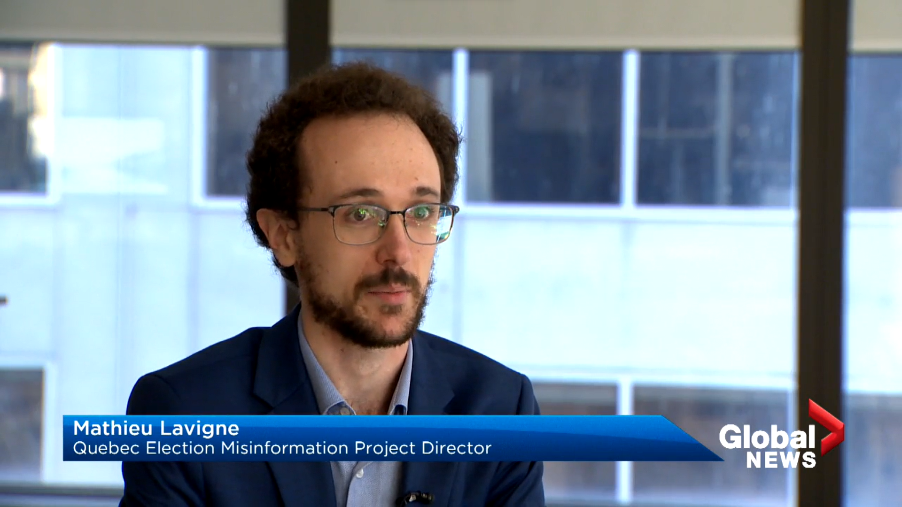

Media
As a scholar whose research is supported by public money, I believe that it is my responsibility to make my research accessible to decision-makers and the general public. I try to do that by publishing public facing reports, organizing and participating in events that are open to the general public, and participating in media interviews in both French and English.

Here is a think piece I recently wrote for McGill Arts’ Newsletter on that matter: Academics as citizens: On the value of public engagement for young career researchers
Below is a sample of newspaper, television, and radio interviews.
Newspaper
Polarisation: Qu’est-ce qu’on attend pour se parler ? La Presse. (Nov. 20, 2024).
Près du tiers des Québécois exposés à de la mésinformation lors des dernières élections. Le Devoir. (March 16, 2023).
Elections Alberta recommends legislative changes to tackle misinformation, disinformation. CBC (Dec. 7, 2022).
Près du tiers des partisans du PCQ doutent des derniers résultats électoraux. Le Devoir. (Oct. 27, 2022).
Une élection tranquille au chapitre de la désinformation. Radio-Canada. (Oct. 8, 2022).
Booed in Beauceville: False Facebook post highlights Quebec election online misinformation. CBC. (Sept. 28, 2022).
‘Out of control’: Quebec politicians facing repeated intimidation on campaign trail. The Canadian Press. (Sept. 14, 2022). Published by CBC, CTV, The Globe and Mail, Global News, CityNews, The Toronto Star, and other regional outlets.
Radio
«Il y a un très petit nombre d’acteurs responsables d’une grande partie de la désinformation», dit le directeur du Projet sur la désinformation électorale. Mario Dumont, QUB Radio. (March 16, 2023).
La désinformation sur les réseaux sociaux : entrevue avec Mathieu Lavigne. Le Québec maintenant (Patrick Lagacé), 98.5 FM. (Oct. 28, 2022).
Les conséquences et origines de la désinformation en ligne. Y’a pas deux matins pareils (Nicolas Haddad), Radio-Canada. (Juil. 4, 2022).
La mésinformation en temps d’élection. Dans la mosaïque (Isabelle Ménard), Radio-Canada. (May 4, 2022).
Television
How climate misinfo harms — and how you can fight back. CBC News: The National, CBC. (March 13, 2023).
Researchers explore misinformation during Quebec election campaign. Global News. (Oct. 3, 2022).
2021 Canadian federal election, CTV Morning Live, CTV. (Sept. 21, 2021).